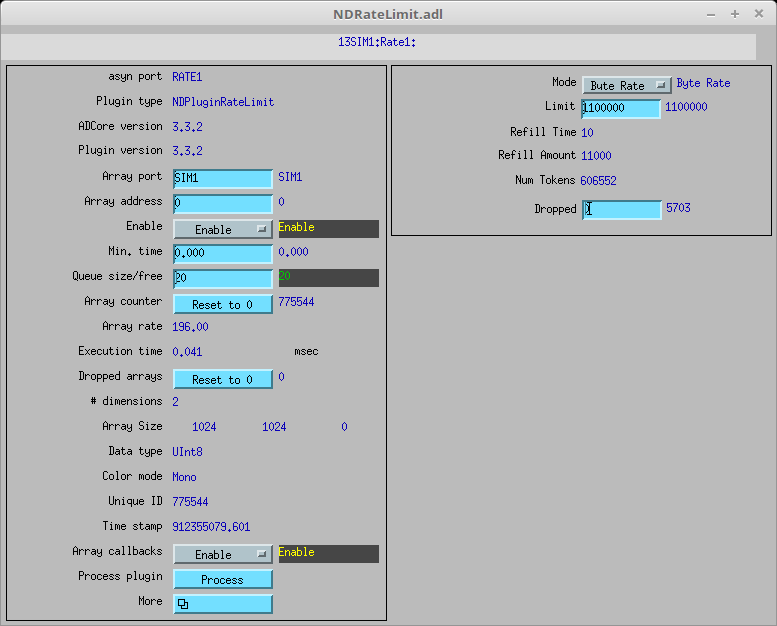

NDPluginRateLimit limits the amount of data flowing through it. It can currently limit either the number of arrays per second or the number of bytes per second passing through.
This plugin implements the token bucket algorithm:
NumTokens=Limit.RefillTime milliseconds: add RefillAmount
to NumTokens, ensuring that NumTokens<=Limit
NumTokens.
Dropped.NDPluginRateLimit inherits from NDPluginDriver. The NDPluginRateLimit class documentation describes this class in detail.
NDPluginRateLimit defines the following parameters. It also implements all of the standard plugin parameters from NDPluginDriver. The EPICS database NDRateLimit.template provides access to these parameters, listed in the following table.
| Parameter Definitions in NDPluginRateLimit.h and EPICS Record Definitions in NDRateLimit.template | ||||||
| Parameter index variable | asyn interface | Access | Description | drvInfo string | EPICS record name | EPICS record type |
|---|---|---|---|---|---|---|
| NDRateLimitMode | asynInt32 | r/w |
The plugin mode (NDRateLimitMode_t). Three choices are available:
|
MODE | $(P)$(R)Mode $(P)$(R)Mode_RBV |
mbbo mbbi |
| NDRateLimitLimit | asynInt32 | r/w |
The rate limit to be applied. Its unit depends on Mode:
|
LIMIT | $(P)$(R)Limit $(P)$(R)Limit_RBV |
longout longin |
| NDRateLimitRefillTime | asynInt32 | r/o | Time between token refills, in ms. Calculated from Limit. | REFILL_TIME | $(P)$(R)RefillTime_RBV | longin |
| NDRateLimitRefillAmount | asynInt32 | r/o | Number of tokens to be added to NumTokens every RefillTime. Calculated from Limit. | REFILL_AMOUNT | $(P)$(R)RefillAmount_RBV | longin |
| NDRateLimitNumTokens | asynInt32 | r/o | Number of tokens currently available in the bucket. | NUM_TOKENS | $(P)$(R)NumTokens_RBV | longin |
| NDRateLimitDropped | asynInt32 | r/w | Number of dropped arrays so far. | DROPPED | $(P)$(R)Dropped $(P)$(R)Dropped_RBV | longout longin |
The NDPluginRateLimit plugin is created with the following command, either from C/C++ or from the EPICS IOC shell.
int NDRateLimitConfigure(const char *portName, int queueSize, int blockingCallbacks,
const char *NDArrayPort, int NDArrayAddr,
int maxBuffers, size_t maxMemory,
int priority, int stackSize)
For details on the meaning of the parameters to this function refer to the detailed documentation on the NDRateLimitConfigure function in the NDPluginRateLimit.cpp documentation and in the documentation for the constructor for the NDPluginRateLimit class.
The following is the MEDM screen that provides access to the parameters in NDPluginDriver.h and NDPluginRateLimit.h through records in NDPluginBase.template and NDRateLimit.template.
